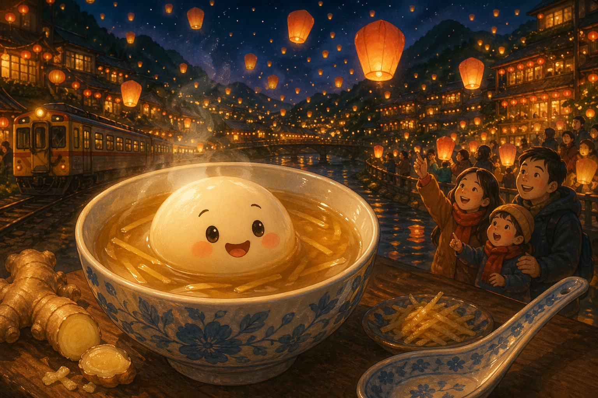
Story 10
Tangyuan and the Lantern Festival
On Lantern Festival night in Pingxi, one cheerful rice ball discovers that the sweetest part of tradition is being together.
Mandarin Spotlight: 湯圓 (tāngyuán) = tangyuan
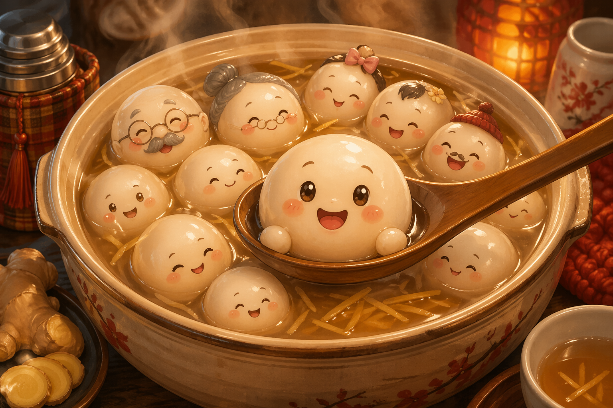
Round and Proud
Tāng Yuán was round, and he was proud of it. "We're all in this soup together!" he announced to his many relations bobbing around him.
Today was the Lantern Festival, the great night of light, wishes, and warm bowls of sweet soup.
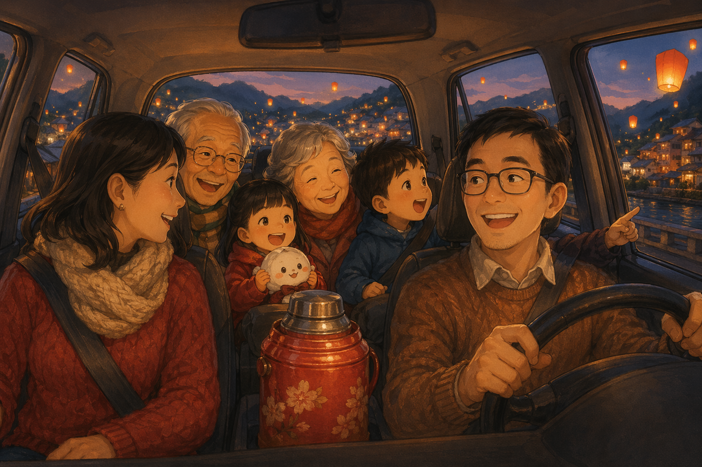
Off to Pingxi
The Chén family packed the whole tangyuan clan into a thermos and drove to 平溪 (Píngxī), the mountain town famous for sky lanterns.
Inside the car, Grandma Chén complained the tangyuan was too sweet this year. As always.
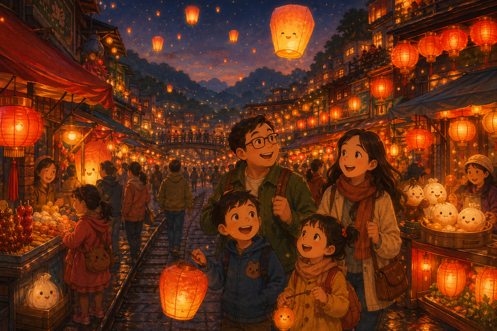
Lantern Town
By dusk, Pingxi shimmered with red lanterns, food stalls, and the excited buzz of families getting ready to launch wishes into the night.
The Chéns bought one huge sky lantern so every family member could write a wish on it.
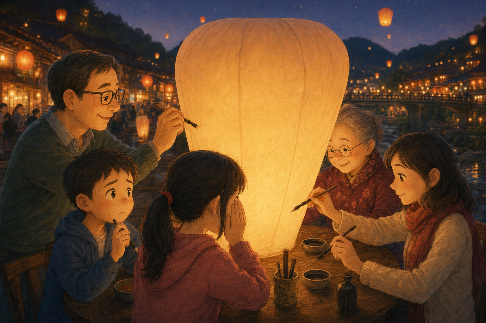
One Wish Each
Grandmother wrote for health. Mama wrote for peace of mind. Baba wrote for the business. Yú-Xīn hid her wish behind her hand.
But Zhì-Míng stared at his blank space and could not think what to write.
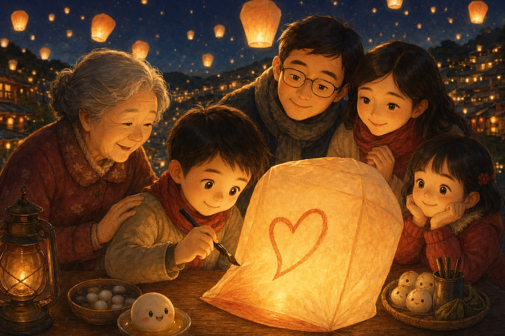
Together Forever
At last Zhì-Míng admitted the wish he wanted sounded silly. He wished they could keep doing this forever, all of them together.
The whole family fell quiet. Then Grandmother said, very firmly, "Write that. It is the best wish on the lantern."
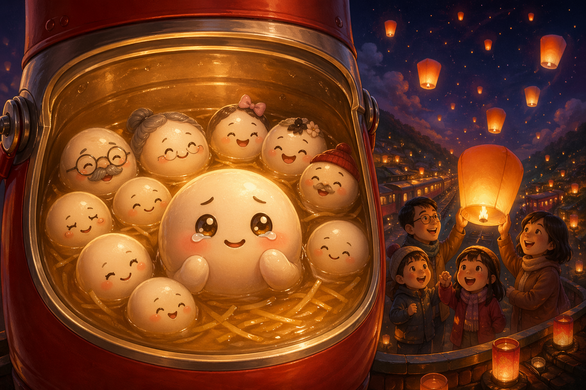
What Tangyuan Is For
Inside the thermos, Tāng Yuán felt his black sesame heart wobble. Tangyuan was not only a food. He was a reminder that family gathers, shares warmth, and returns to the same bowl.
His pink cousin nodded. Of course that was what they were for.
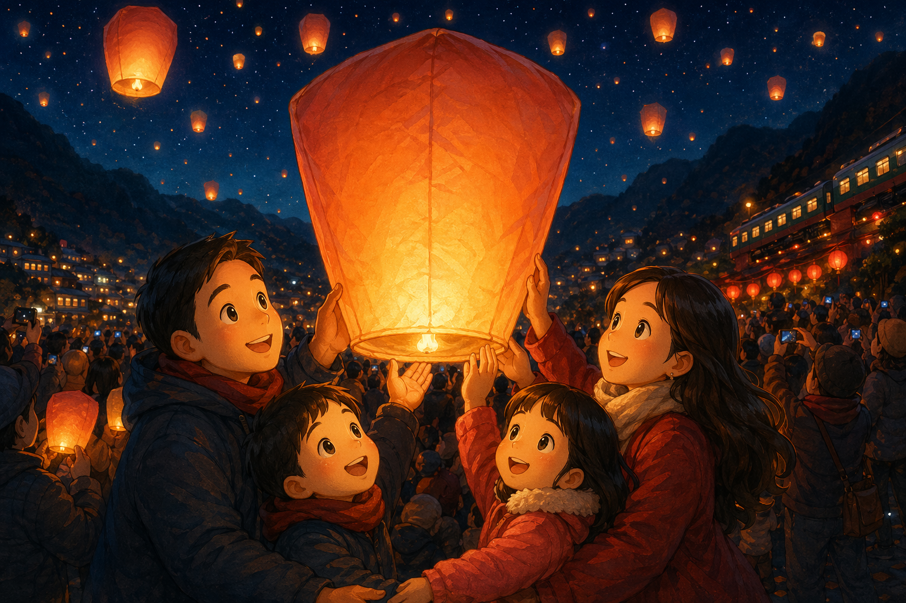
Three, Two, One
All across the launch field, lanterns glowed in waiting hands. The crowd counted down together while the Chéns gripped their lantern edges.
Then came the shout, "放!" (fàng), "Release!" and the night opened like a dream.
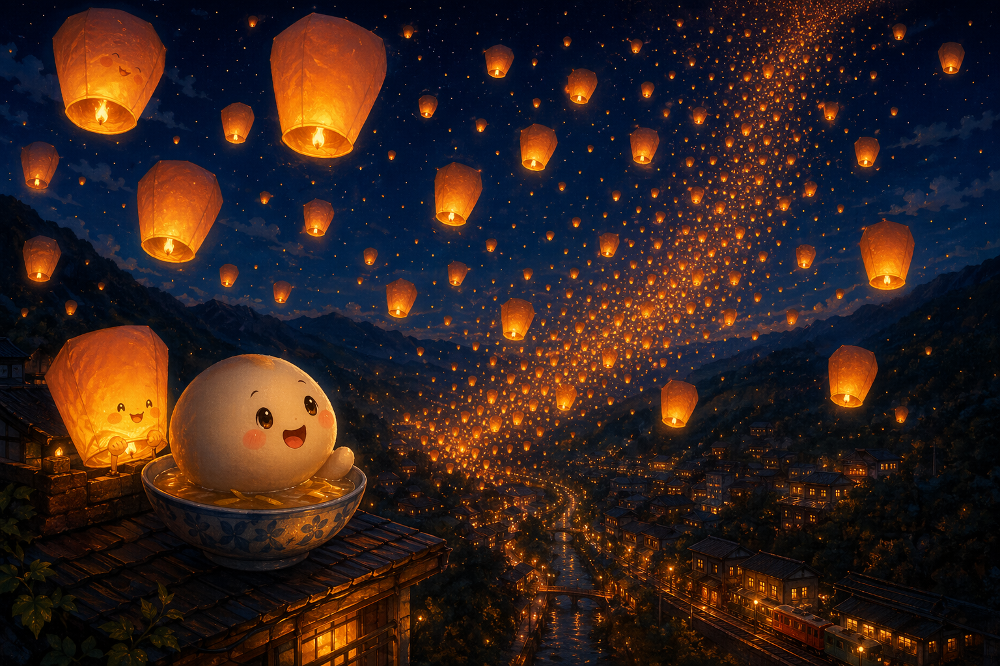
A River of Light
Hundreds of lanterns floated upward into the dark mountain sky, each one carrying a precious hope. Somewhere among them rose Zhì-Míng's wish: together forever.
"太棒了," (tài bàng le), Grandmother whispered. For once, she had no correction to add.
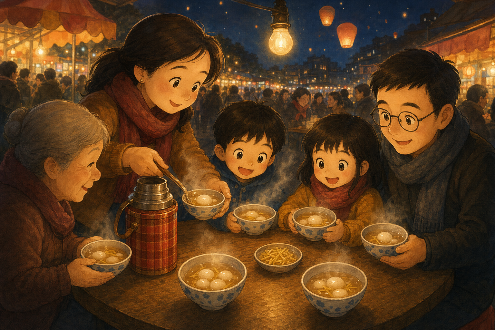
Eat Together
After the launch, the family sat at a little night market table while Mama unscrewed the thermos and ladled out bowls of tangyuan in ginger soup.
Grandmother stopped everyone with a raised finger. "We eat together. On the count of three."
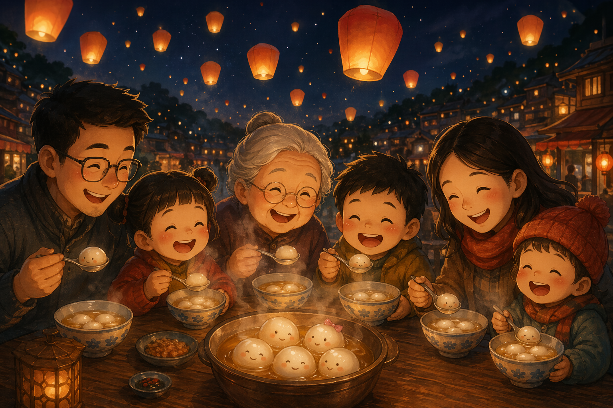
The Taste of Home
Five spoons dipped at once. Zhì-Míng bit into Tāng Yuán, and warm black sesame sweetness filled his mouth like a memory being born.
In that bite, Tāng Yuán understood: togetherness does not last forever in time, but it lasts forever in the heart.
Goodnight, little rice ball. May you float in warm love, carry sweetness into your dreams, and always remember that you are never alone.